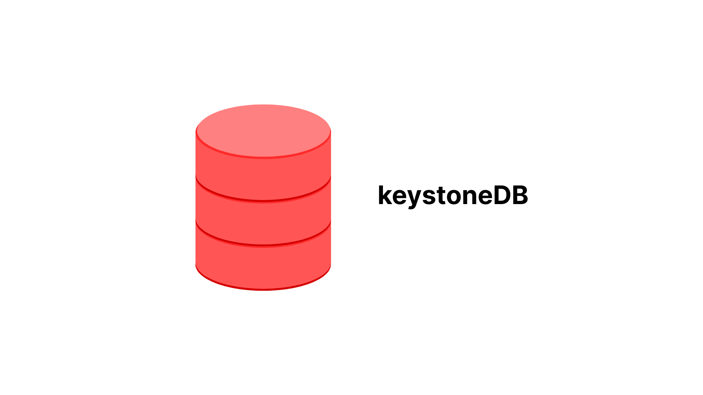

Project Demo Video
keystoneDB
A relational DBMS built upon persistent key-value storage
Database Management Systems Laboratory (CS39202) Term Project


Key Features
Expression Evaluation
Support for nested expressions including arithmetic operations, logical operations, and more
Multiple Data Types
Support for INT, FLOAT, and CHAR(N) data types
Constraints
NOT NULL constraint, SQL comments, and more
Multi-line Support
Execute multi-line SQL statements with ease
File Execution
Run SQL scripts directly from files
Persistent Storage
Built upon LSM-Tree like MyRocks and TiDB
Build Instructions
Ubuntu 22.04
To get the third party dependencies (via source code), run:
git submodule init
git submodule updateInstall the following libraries on your computer:
# required by rocksdb
sudo apt-get install libgflags-dev libzstd-dev libsnappy-dev zlib1g-dev libbz2-dev liblz4-dev
# required by protobuf
sudo apt-get install libprotobuf-dev protobuf-compiler
# required by flex and bison
sudo apt-get install flex bisonArch Linux
# Required by RocksDB
sudo pacman -S gflags zstd snappy zlib bzip2 lz4 liburing-dev
# Required by Protobuf
sudo pacman -S protobuf
# Required by flex and bison
sudo pacman -S flex bisonIf compiling the GRPC library gives an error, you need to recompile the db.proto with:
protoc --cpp_out=./ common/codec/db.protoNote: This code was tested on Arch Linux. If you are running on Ubuntu there can be an error related to abseil. If you encounter this error, you need to comment lines 153 and 154 in the CMakeLists.txt file.
Building the Project
mkdir build
cd build
cmake ..
make -j4Note: On building it the libfort library might gives an error with cmake .. commands due the libfort cmake version specified. IF you update the libfort Cmake Version then the code does not compile. A fix to that is to run the command cmake -DCMAKE_POLICY_VERSION_MINIMUM=3.5 .. in the build directory first then run cmake .. and then make -j4.
Supported SQL Examples
CREATE DATABASE example;
USE example;
CREATE TABLE user (id int, score float);
SHOW TABLES;
INSERT INTO user (id int NOT NULL) VALUES (1);
SELECT id from user WHERE id = 42;
UPDATE user SET id=1 WHERE id=42;
DELETE FROM user WHERE id=42;
SELECT * from user where id=(1+2*2+(id=id)+id^id+id) AND id = id%2 AND id IS NOT NULL;
select * from t1 where id is not null;
DROP TABLE user;
exit; -- keyword used to exit from the databaseAdditional examples can be found in test.sql.
Project Structure
| File | Description |
|---|---|
| include/* | all the header files |
| sql/* | intermediate representation(IR) for SQL |
| executor/* | execute SQL IR |
| executor/processor/* | processor for SQL expression(visitor pattern) |
| parser/sql.l | lexical analysis for SQL(flex) |
| parser/sql.y | syntax analysis for SQL(bison) |
| third_party/* | third party dependencies, e.g., googletest, rocksdb |
| test/* | unit test |
| docs/* | documentation for the project |
How to Run
# Assuming you are in build directory
./build/keystoneDB